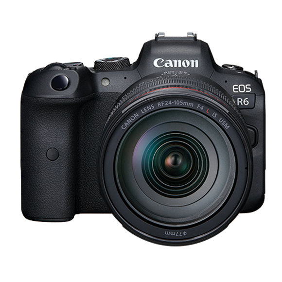

Nonca Inc. est une entreprise japonaise basée à Tokyo spécialisée dans les produits optiques, incluant appareils photo, photocopieurs et imprimantes. Le nom officiel japonais de la compagnie est kiyanon.
Nouveaux produit

EOS M50 Mark 2
L’appareil photo sans miroir EOS M50 Mark II est idéal pour les personnes qui souhaitent prendre des photos et filmer des vidéos, notamment les créateurs de contenu de médias sociaux en herbe.

EOS R6
L’appareil EOS R6 est doté du même capteur d’image et du même processeur d’images de base que l’appareil EOS-1D X Mark III, offrant une plage de sensibilités ISO d’origine de 100 à 102 400.
imagePROGRAF PRO-300
Prenez le contrôle créatif de vos images et donnez-leur vie grâce à l’imprimante pour beaux-arts et photos à jet d’encre professionnelle imagePROGRAF PRO-300.